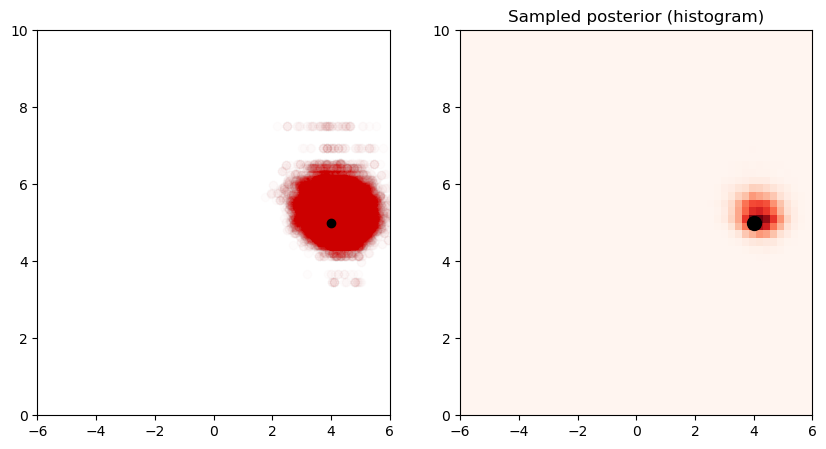

Example 5.13#
Example with unknown mean and variance with the Metropolis-within-Gibbs algorithm. Compare it to Example 5.9.
import numpy as np
import matplotlib.pyplot as plt
T = 100
z_true = 4
s_true = 5
Y = np.random.normal(z_true, s_true, T)
def normal_pdf(x, mu, sigma):
return 1/np.sqrt(2*np.pi*sigma**2) * np.exp(-(x-mu)**2/(2*sigma**2))
def log_normal_pdf(x, mu, sigma):
return -0.5*np.log(2*np.pi*sigma**2) - (x-mu)**2/(2*sigma**2)
sigma_q = 1
alpha = 4
beta = 5
m = 0
kappa = 2
N = 100000
z = np.zeros(N)
s = np.zeros(N)
z[0] = 0
s[0] = 1
acc = 0
fig = plt.figure(figsize=(10, 5))
burnin = 100
for n in range(1, N):
# sample z
z_p = np.random.normal(z[n-1], sigma_q, 1)
logr_z = log_normal_pdf(z_p, m, kappa) + np.sum(log_normal_pdf(Y, z_p, s[n-1])) - log_normal_pdf(z[n-1], m, kappa) - np.sum(log_normal_pdf(Y, z[n-1], s[n-1]))
u = np.random.uniform(0, 1)
if np.log(u) < logr_z:
z[n] = z_p
else:
z[n] = z[n-1]
# sample s
s_p = 1 / np.random.gamma(alpha, 1/beta, 1)
logr_s = np.sum(log_normal_pdf(Y, z[n], s_p)) - np.sum(log_normal_pdf(Y, z[n], s[n-1]))
u = np.random.uniform(0, 1)
if np.log(u) < logr_s:
s[n] = s_p
else:
s[n] = s[n-1]
plt.clf()
plt.subplot(1, 2, 1)
plt.scatter(z[burnin:n], s[burnin:n], color=[0.8, 0, 0], alpha=0.01, label='samples')
plt.scatter(z_true, s_true, color='k', marker='o', label='true')
plt.xlim([-6, 6])
plt.ylim([0, 10])
plt.subplot(1, 2, 2)
plt.hist2d(z[burnin:n], s[burnin:n], bins=50, density=True, cmap='Reds', range=[[-6, 6], [0, 10]])
plt.scatter(z_true, s_true, color='k', marker='o', s=100)
plt.title('Sampled posterior (histogram)')
plt.xlim([-6, 6])
plt.ylim([0, 10])
plt.show()
/var/folders/d8/86whr2t12h70n511w7s7cm_w0000gn/T/ipykernel_31987/301537031.py:55: DeprecationWarning: Conversion of an array with ndim > 0 to a scalar is deprecated, and will error in future. Ensure you extract a single element from your array before performing this operation. (Deprecated NumPy 1.25.)
s[n] = s_p
/var/folders/d8/86whr2t12h70n511w7s7cm_w0000gn/T/ipykernel_31987/301537031.py:44: DeprecationWarning: Conversion of an array with ndim > 0 to a scalar is deprecated, and will error in future. Ensure you extract a single element from your array before performing this operation. (Deprecated NumPy 1.25.)
z[n] = z_p
